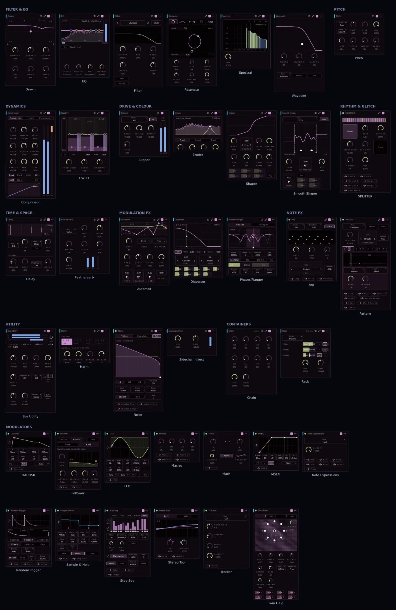

Feathers
A polyphonic synthesizer and effects rack for CLAP and VST3. Its sound is an endless field of waveforms you glide through, not a list of presets you scroll.

Install
Paste one line. It downloads the latest release, checks it, and installs the synth and the Chain (CLAP and VST3) into your own plugin folders: no clone, no GitHub account, no administrator password, and on macOS nothing to unquarantine.
macOS and Linux (Terminal)
curl -fsSL https://labs.owletrecords.com/feathers/install.sh | bashWindows (PowerShell)
irm https://labs.owletrecords.com/feathers/install.ps1 | iexThen restart your DAW or rescan its plugins. Prefer to download by hand? Take the zip for your platform from the latest release; SHA256SUMS.txt beside it lets you check the download. The scripts are short and readable: install.sh, install.ps1. Per-platform notes and options are in the README.
Pre-1.0. Patches and presets are not stable before 1.0. Devices and engines are still changing, and a later build may load a saved patch, preset or DAW project differently, or not restore parts of it. Don't rely on Feathers for projects you need to reopen exactly as they were, and keep a bounce of anything that matters.
What it is
A synthesizer with a deep modulation system and a rack of effects around it. Modulators and effects are added, moved and removed the same way, and effects can hold chains and racks of their own.
Engines and terrain
The terrain is a wavetable with no edges: every position on it has its own waveform, so you glide through an endless field of timbres instead of stepping through stored frames. Each sound is a position on that terrain. The Explore surface shows it under the puck, and you can mutate it, then undo and redo. Engines include V5, Additive, Pluck, Drum, Resonate and Basic Shapes, plus the original Morph and Stair.
It learns what you like. Heart a sound and the terrain bends toward it: your likes reshape the field so more of it sounds like what you liked.
Perform turns your sounds into waypoints: each one sits as a star in a blend circle, and one puck interpolates between all of their settings at once. Glide the puck and the patch morphs continuously from sound to sound; route a modulator to its position and it tours the waypoints for you.


Modulation everywhere
Modulators sit in a lane of their own and are added, reordered and removed like effects: DAHDSR, LFO, MSEG, Math, Twin Field, Pattern, Step Seq, Sample & Hold, Random Trigger, Follower, Macros and Note Expressions. Send any of them to almost any knob, on the synth or on an effect.
- Shape the response: each route can follow a linear, exponential or logarithmic curve, or rectify a bipolar source.
- See what moves: a modulated knob shows a ring and its live value, and when you pick a modulator every knob it can reach lights up.
- Random stays put: random and held values are saved with the patch, so reloading it gives you the same sound.

Effects depth
Effects sit in a lane. Each has a compact card for quick moves and a larger window with every control on the card and usually more. Several can hold effects of their own: you can put a filter in the Delay's feedback, for instance, or process the middle of the Compressor.


Rack modes
Chain and Rack devices nest whole chains, in series or in parallel, to any depth. A Rack's mode decides what each of its chains hears and how they come back together:
- Parallel
- Every chain hears the input, and their outputs sum.
- Select and Blend
- A Position control picks one chain, or crossfades between neighbours. Modulate it and the rack becomes a morphing switcher.
- Mid/Side and Left/Right
- One chain per half of the signal, so you can widen, saturate or delay only the sides.
- Bands
- A multiband splitter into 2, 3 or 5 bands with adjustable crossovers and slope, one chain per band. Band filtering can sit before the chain, after it (so the harmonics a chain creates stay inside its band), or both. With Key Track, the note you play places the crossovers.
An open standard for devices
Every effect and modulator in Feathers is a device built on one shared design, and the aim is for it to become a standard other plugin makers can build on. The device SDK in the repository is MIT-licensed, so devices built on it can be open or closed source, while Feathers itself stays GPL-3.0-or-later. The design is still open, and plugin makers who would build on it are the people best placed to shape it.
Hosting
Built today: You can automate any Feathers control from your DAW, however deep it sits in chains and racks, in both CLAP and VST3. The synth's own parameters are always available. Effect controls appear in your DAW automatically as you touch them, up to 256 at a time. When all 256 are in use, the one you touched longest ago is reused. To keep a control in place, right-click it and choose "Expose to host". Turning a knob records automation, DAW automation moves the knob, and your assignments are saved with the project.
Planned, not built: running other CLAP plugins inside Feathers' chains and racks, and devices from other makers that look and modulate like Feathers' own.
Platforms
Linux x86-64
First-class. Feathers is developed and played on Linux every day, in Bitwig, and every pre-release build ships for it.
macOS universal
Apple silicon and Intel in one build. Signed ad hoc, not notarised. The one-line installer downloads with curl, which macOS does not quarantine, so there is nothing to clear; a browser download needs the README's unquarantine step.
Windows x86-64
The editor is new: it passes tests on CI's Windows desktop, but nobody on the team has played it on a Windows machine yet. Please report anything odd.
Each build contains the synth and the Chain as CLAP and VST3; the Linux and Windows builds also include the synth's standalone.
Open source
The core of Feathers is, and will remain, open source under the GNU General Public License, version 3 or later. The open device standard means anyone can build devices on top of that core. Feathers is in active development, and we would like to hear from collaborators (DSP, UI or platform people who want to work on a deep, test-heavy C++ codebase) and from sound designers, producers and performers willing to use pre-release builds and give feedback.